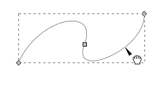
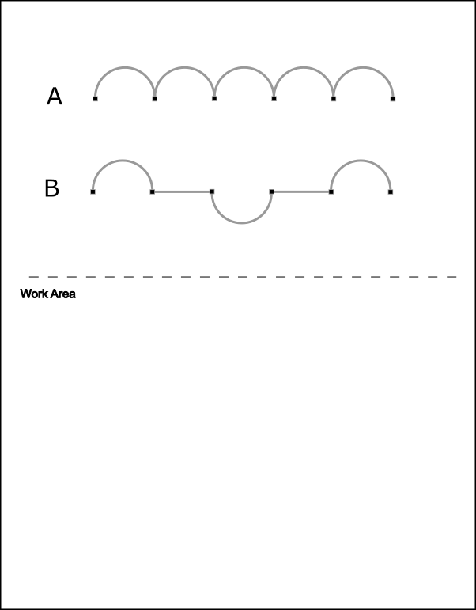
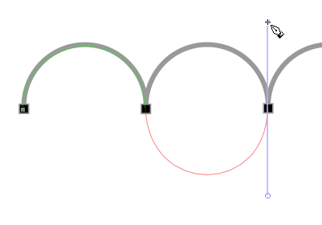
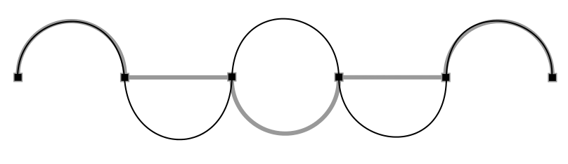
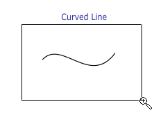
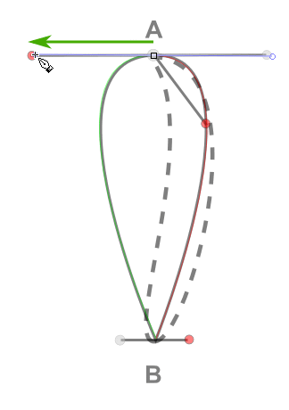
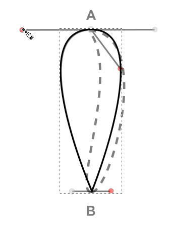
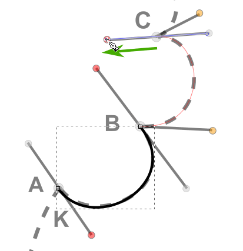

Many objects in the Inkscape program can be created by starting with basic shapes and then
editing them to create new shapes. In this tutorial, you will use some basic shapes to create a logo.
In this tutorial on the work area, you will learn how to:
Draw straight lines.
End path segments and split lines.
Draw curved lines.
Select and adjust curve segments.
Draw two types of curves, smooth and pointed.
Edit curves, changing from smooth to pointed, and vice versa.
Getting Started
The first part of this lesson involves manipulating the Pen tool on a blank artboard.
Start Inkscape if it isn't started already.
Open the file named Tutorial04Image01.svg file in the Tutorial04 folder. The top portion of the artboard shows the path that you will create. Use the bottom half of the page for this exercise.
Choose View > Zoom > Drawing to fit the page into the window and then close the palette by choosing View > Show/Hide, and clicking on Palette. You won't need to use it for this lesson.
Select the Pen tool icon in the toolbox (). A Tool Controls bar appears at the top of the window dedicated to
enhancing your ability to control the Pen tool.
Pen Tool Controls Bar.
Click on the Create a Sequence of Straight Line Segments icon () in the Pen tool control bar.
Click and release once near the top of the page. The Pen tool creates a square anchor point.
Then, move the mouse away from the original anchor point. See how the line is drawn from the
cross at the tip of the pen.
Move the mouse to the right and click once to create the next anchor point in the path.
Note: The first segment you draw will not be set until you click a second anchor point. Also, if direction handles appear, you've accidentally dragged with the Pen tool; release the mouse left button, press <Delete>, click on the Pen tool straight lines icon to make sure it is active ( and click again in the work area. (Direction handles are used to reshape curved paths, but do not print.)
The first point connects to the new anchor point. Click back under the initial anchor point to create a zigzag pattern. Click and release from point to point to create the zigzag. Your zigzag is complete when it has
a total of six anchor points.
Zigzag path, last path not setLeft-click to set last pathRight-click or press <Enter> to finalize the path
Choose the Select tool (). One of the many benefits of using the Pen tool is that you can create custom paths and edit the anchor points that make up the path. You can learn more about the selection tools by reviewing Tutorial 2, "Selection Basics"; here you will see how the selection tools relate to the Pen tool.
Using the Select tool, click on the zigzag path and see how the zigzag is enclosed in a
bounding box, signifying that all line segments and anchor points are selected.
Zigzag path selected
Left-click and drag the path to a new location anywhere on the artboard. Notice that all the line
segments and anchor points travel together, maintaining the zigzag path.
Deselect the zigzag path any one of these three ways:
Use the Select tool and click on an empty section of the artboard.
Use Edit > Deselect from the menu.
Click once on the Pen tool icon in the Toolbar. Even though it looks like the
path is still active, it will not connect to the next anchor point created.
Note: Here is an optional way of creating a new path separate from the one you have just
created: you can click on the Pen tool again after you have finalized (that is, right-clicked or
pressed <Enter>) you last composite path. Even though it looks like the path is
still active, it will not connect to the next anchor point created.
Choose the Edit paths by nodes tool (). Note that a new Tools Control bar appears dedicated to the Edit path tool.
Edit paths by nodes tools control bar (full bar)
Each icon represents a specific function.
Left half of the Edit paths by nodes control bar Right half of the Edit paths by nodes control bar
We'll use several Edit Paths by Nodes tools in this tutorial.
Click on any one point in the zigzag. Using the marquee selection technique with the Edit Paths by Nodes tool, or Node tool for short, can make selecting individual anchor points easier. The selected anchor point turns red, while the rest remain grey.
Selecting a single anchor point with the Node tool.
Note: the red selected anchor point turns blue when you take the Node cursor off, indicating
that the point is still selected.
A blue anchor point means that it is still selected.
With the anchor point selected, click and drag. The anchor point is moving but the others are stationary. This is how you edit a path.
Dragging a single anchor point to the right with the Node tool.
At times, you will need to recreate just one line segment in a path. Click on the Node tool
(),
and click on any line segment with the Node tool cursor.
Select a path on click on with the Node tool.Click on the path with the Node tool.
Note how the two anchor points for that segment turn blue, indicating that you have selected
that part of the path.
Click on the Delete Segment Between Two Non-Endpoint Nodes icon
() in the Tools Control Bar. The selected line
segment disappears.
Line segment is deleted.
Now choose Edit > Deselect to deselect the two separate paths.
Two separate paths.
We will now reconnect the two paths. Click on the Node tool and then click on one of the
anchor points of the deleted line segment to select it. The anchor point turns red.
Clicking on a first anchor point.
Now <Shift>-click on the second anchor point. Note how the anchor points change color.
The first (blue) anchor point stays selected because you <Shift>-clicked on the second (red) point.
If you just clicked on the second anchor point without pressing the <Shift> key at the same time,
you would have deselected the first point. It would have reverted to its original grey color.
<Shift>-clicking on the second anchor point.
With both anchor points selected, click on the Join Selected Endnodes with a New Segment icon
()
in the Tools Control Bar. There is now a new line segment connected the selected anchor points.
Anchor points are now connected.
File > Save and close this file.
Creating Straight Lines
In Tutorial 3, you discovered that using the <Ctrl> key in combination with shape tools constrains the shape of objects you create using Inkscape. This is also true with the Pen tool, except that using the <Ctrl> key constrains the paths you create to angles that are multiples of 15°.
In this part of the lesson, you will learn how to draw straight lines.
Open the file named Tutorial04Image02.svg from the Tutorial04 folder. The top portion of the artboard shows the path that you will create. Use the bottom half of the page for this exercise.
Select the Pen tool (), then choose
the Create a sequence of straight line segments icon () in the Tool Controls bar. Click once in the
work area of the page.
Hold the <Ctrl> key down and click about an inch to the right of the original anchor point.
While holding down the <Ctrl> key, click and drag with the mouse and try to replicate
the path in the exercise file.
Hold down the <Ctrl> key while clicking and dragging to constrain the path.
The first horizontal line segment is where it's supposed to be. It is just hidden underneath
the dashed bounding box.
File > Save and close the file.
Creating Curved Paths
In this part of the lesson, you'll learn how to draw smooth, curved lines with the Pen tool. In vector-drawing programs such as Inkscape, you can draw a curve, called a Bézier curve, using control points. By setting anchor points and dragging direction handles (controls), you can define the shape of the curve. Although drawing curves this way takes some getting used to, it gives you the greatest control and flexibility in creating paths.
Before we get started with a lesson file, choose File > New to create a new document in Inkscape. Click on the Zoom In or Out icon in the toolbox () and then click on the Zoom to Fit Page in Window icon in the toolbar that appears when you click on the Zoom In or Out icon (). Consider this page a "scratch" page to practice the Bézier curve.
Click on the Pen tool () in the toolbar, and then on the Create Regular Bézier path icon () in the Pen tool control bar that appears when you click on the Pen tool.
Click and drag to create a curved path.
Continue clicking and dragging at various locations on the page. The goal for this exercise is not to create anything specific, but to get you accustomed to the feel of the Bézier curve.
Notice that as you click and drag, direction handles appear that end in round direction points. The angle and length of the direction handles determine the shape and size of the curved segments. Direction lines do not print and are not visible when the anchor is inactive.
Choose Edit > Deselect.
Choose the Node tool () and select a curved segment to display the direction handles again. Moving the direction points reshapes the curves.
Note: Endpoints are diamond-shaped, and, when selected, appear red when the cursor is on them,
blue when the cursor is off them; unselected, they appear grey. Anchor points in the middle of a line or curve segment are squares. Like segment endpoints, they are red when selected and the cursor is on them, blue when selected and the cursor is off them. Direction points are circles. These lines and points do not print with the artwork.

Select anchor points to access the direction handles.Select an endpoint to access direction handles for a path segment.Select non-endpoint anchor points to access direction handles of
contiguous path segments.
Choose File > Close and do not save this file.
Building a Curve
In this part of the tutorial, you will learn how to control the direction handles
in order to control curves.
Open the file named Tutorial04Image03.svg from the Tutorial04 folder. On this page you can see the paths that you will create. A template layer has been created in this file so that you can practice using the Pen tool by tracing. The work area below the path is for additional practice on your own.
Click on the Zoom In or Out icon () in the toolbox and drag a marquee around the first curve.
Zoom in to a specified area by dragging a marquee when on the
Zoom In or Out tool.
Select the Pen tool () and click and hold at the base of the left side of the arch, and drag up to create a direction line going the same direction as the arch. It helps to remember to always follow the direction of the curve. Release the mouse when the direction line is slightly above the arch.
When a curve goes up, the direction line should also go up.When you release the mouse and move the cursor away from the
direction line, the direction line stays put.
Note: The artboard might scroll as you drag the anchor point. If you lose visibility
of the curve, you can roll the mouse wheel to move your artwork up or down, or <Shift>-roll
the mouse wheel to move your work left or right, or <Ctrl>-roll the mouse wheel to magnify
or demagnify your work to bring the path back into view.
Click on the lower right base of the arch path and drag down. Release the mouse when the top direction line is slightly above the arch.
To control the path, pay attention to where the direction handles fall.
A good adjustment.
Right-click or press <Enter> to finalize the curve.
Result.Edit > Deselect or press <Esc> to hide the
bounding box.
If the path you created is not aligned exactly with the template, return to the Edit Nodes tool and select the anchor points one at a time. Then adjust the direction handles until your path follows the
template more accurately.
Note: Pulling the direction handle longer makes a higher slope, while pulling it shorter makes the slope flatter.
Save the file by choosing File > Save.
What you created is an open path; now you are going to create the second path on this page. If you click with the Pen tool while the original path is still active, the path will connect. To avoid doing this,
right-click or press <Enter>.
Click and drag at the left base of path "B," again in the direction of the arch. Click and drag down on the next square point, adjusting the arch with the direction handle before you release the mouse. Don't worry if it is not exact; you can correct this with the Edit Nodes tool () when the path is complete.
Click and drag up to create the upward arch.
Continue along the path, alternating between clicking and dragging up and down. Put anchor points only where you see the square boxes. If you make a mistake as you draw, you can undo your work by choosing Edit > Undo or by pressing <Ctrl>-Z. Inkscape, by default, lets you undo a series of actions – limited only by your computer's memory – by repeatedly choosing Edit > Undo or pressing <Ctrl>-Z.
Tip: You have the ability to undo and redo multiple times in Inkscape. When you use the Edit menu, you will see a description of the change that would happen. Multiple steps can be undone using the Edit > Undo History command. For more details, go to Help > Inkscape Manual > 4. Editing Basics > Undo and Redo.
Alternate between dragging up and down with the Pen tool.
When the path is complete (and you right-clicked or pressed <Enter> to finalize
the path), choose the Nodes tool () and select an anchor point.
When the anchor point is selected, the direction handles appear and you can readjust
the slope of the path.
Practice repeating these paths in the work area.
File > Save and close the file.
Curves and Corner Anchor Points
When creating curves, the directional handles help to determine the slope of the path. Returning to a corner point requires a little extra effort. In this next portion of the lesson, we will practice converting curve points to corners.
Open the file name Tutorial04Image04 from the Tutorial04 folder. On this page you can see the path that you will create. Use the top section as a template for the exercise. Create your paths directly on top of those that you see on the page. The work area below is for additional practice on your own.

Use the Zoom In or Out tool in the toolbox and drag a marquee around the top path.
You will get a much more accurate path when you are zoomed in.
Choose the Pen tool (), click on the first anchor point and drag up to create the first
direction line.
Then click on the second anchor point and drag down, just as you have been doing in the
previous exercises.
Click on the second anchor point.Drag down to create the first curve.
Create the second path segment.
Click on the third anchor point.

Drag up to create the second curve.
Make the third curve.
Click on the fourth anchor point.Drag down to create the third curve.
Continue as you did in the previous exercise to arrive at the end of the
sequence of connected curves.
Right-click or press <Enter> to finalize the path.
Press <Esc> to hide the bounding box.
You have now created the first draft of the path for this exercise. Now you will edit the path with the Node tool () to create corner nodes and convert two downward curves into upward curves.
Click on the Node tool () in the toolbox and then click anywhere on the path you just created.
Click on the second (downward) curve to select it. Notice that it is the only segment selected
of the whole path and that its anchor points are the only ones highlighted.
With the second path segment still highlighted, click on the Make Selected Nodes Corner icon (
) in the toolbar. Notice how the two highlighted square
anchor points to the path segment turn into highlighted diamonds.
Now click-drag the left lower direction control up to more-or-less match the position
of the upper direction control that is attached to the left-hand path segment. Notice that the
active direction control is colored red to let you know that it is the active control.
Click-drag the right lower direction control up to more-or-less match the position
of the upper direction control that is attached to the path segment on the right. See if
you can get your curve to match the shape of the one underneath it.
Now click on the second downward curve with the Nodes tool.
Click again on the path segment to select it. The path segment's anchor points turn
into highlighted squares.
With the path segment still selected, click on the Make Selected Nodes Corner icon (
) in the toolbar. The path segment's anchor points turn into
highlighed diamonds.
Click drag the segment's direction controls upward as you did on the first downward
curve. See if you can match shapes.
Note: You can also move anchor points by click-dragging them with the Nodes tool.
If an anchor point is off, just click-drag it into position. You might need to readjust segment
direction controls because you moved the anchor point. Once you're done with this exercise,
experiment in creating different shapes and changing them with the Nodes tool.
When you have finished fine-tuning the path, press <Esc> once or twice to hide the bounding
box.
File > Close.
Choose View and click on the Zoom to Fit Page in Window icon () in the toolbar. You can also press the F3 key and then 5 to get the same result.
Use the Zoom In or Out tool () to drag a marquee around the second path and enlarge its view.
With the Pen tool, click on the first anchor point and drag up, then click and drag down on the second anchor point.
This motion of creating an arch should be familiar to you by now.
Clicking on the first anchor point and dragging up.Clicking on the second anchor point and dragging down.
Click on the third anchor point and drag up.
Click on the fourth anchor point and drag down.
Continue until you get to the end of the path.
Right-click or press <Enter> to finalize the path.
Press <Esc> to hide the bounding box.

Now click on the Edit Nodes tool () in the toolbox and click
on the path you just created.
Click on the second path segment, that is, on the curve that dips below the straight line segment. The two
anchor points that contain the curve become highlighted highlighted squares.
Click on the Make Selected Nodes Corner icon () in the toolbar. The two highlighted square anchor points
turn into highlighted diamonds.
Press <Shift>-L to make the curve a straight line that now connects the two anchor points.
(<Shift>-L — Think Line!)
<Shift>-L
Now click twice on the second downward curve to select it.
Before selecting the curve.First click with the Node tool.Second click with the Node tool.
Press <Shift>-L to transform the curve into a straight line.
<Shift>-L
We'll use an alternate method for bringing the middle upward curve down. Put the Node tool
on the curve. See how a hand appears near the cursor, signifying that the tool is on top of an
object that can be manipulated.
Node tool with hand on top of curve.
Now click-drag the curve downward.
Adjust anchor points and direction controls as you want with the Node tool to fine-adjust the path.
Then press <Esc> once ...
Press <Esc> twice to hide the bounding box.
Practice repeating these paths in the lower portion of the exercise page. Try out
different shapes and see what happens.
File > Close the file.
Creating the Pear Illustration
In this next part of the tutorial, you'll create an illustration of a pear pierced by an arrow.
This procedure will incorporate what you have learned in the previous exercises as well as teach you
some additional pen techniques.
Choose File > Open, and open the PearParts.svg file in the Tutorial04 folder.
Choose View > Zoom > Zoom Out to make the finished artwork smaller and leave it on your screen as you work.
(Use <Shift>-scroll and scroll to move the artwork where you want it in the window.) If you don't want
to leave the image open, choose File > Close. Note: For an illustration of the finished artwork
in this tutorial, see the beginning of this tutorial.
Now open the start file to begin the lesson.
Choose File > Open the PearParts.svg file in the Lesson04 folder.
Choose File > Save As, name the file Pear.svg, and save it in the Tutorial04 folder.
Creating the Arrow
You'll begin by drawing the straight line for the arrow. The template layer allows you to follow along
directly over the artwork.
Click on the Zoom In or Out icon () in the toolbox and draw a marquee around the arrow to magnify it.
Marquee drawn around arrow using Zoom In or Out tool.Result.
Select the Pen tool () in the toolbox. Then select the Create a Sequence of Straight Line Segments icon
()
in the Pen tool control bar that appears when you select the Pen tool.
Click point A at the upper right end of the line to create the starting anchor point — a small open square.
Setting the initial anchor point at A.
Click point B at the right end of the line to create the ending anchor point.
Setting the end anchor point at B.
Press <Enter> or right-click to finalize the line segment.
Finalizing the arrow shaft.
Press <Esc> to make the bounding box go away.
Hiding the bounding box.
Now you'll make the straight line thicker by changing its stroke weight.
With the Select tool ()
from the toolbox, click the straight line to select it.
Selecting the straight line.
Choose Object > Fill and Stroke to display the Fill and Stroke palette.
Fill and Stroke palette.
Note: the Fill and Stroke palette might appear docked to the right side of the work window. This
is the default appearance when it is first activated. For further information about dockable dialog windows,
Click on Help > Inkscape Manual > Comprehensive Index > D > Dialogs > Docking > Dockable Dialogs.
Click on the Stroke style tab.
Stroke style tab highlighted.
In the Fill and Stroke palette, type 2 in the Width text box, leave the unit of measurement
as px (pixels), and press <Enter> to apply the change.
Two-pixel stroke weight.Result.
Splitting a Path
To continue creating the arrow for this illustration, you'll split the path of the straight line using the Insert
New Nodes into Selected Segments tool and the Break Path at Selected Nodes tool.
With the straight line still selected, click on the Edit Nodes tool
() in the toolbox. The Edit Nodes toolbar appears. Note how the endpoints of
the line are two grey diamonds – the line has not been selected for editing yet.
Grey endpoints – line not selected for editing.
Now click on the straight line with the Edit Nodes tool. The two endpoints change into two blue and
yellow diamonds, indicating that the line and its endpoints have been selected for editing.
Blue and yellow diamond-shaped endpoints – line selected for editing.
Click on the Insert New Nodes into Selected Segments tool () in the toolbar.
A new node is inserted in the middle of the line.
New blue and yellow node inserted in the middle of the line.
Click on the midpoint node with the Edit Nodes tool to select it.
Midpoint before selection – note the selected endpoints.Midpoint after selection – the endpoints have changed to deselected grey.
Now click on the Break Path at Selected Nodes tool ()in the toolbar.
The midpoint node on the straight line turns blue (red when you hover the cursor over it).
Midpoint selected for splitting line.
With the Edit Nodes tool still selected, click-drag the midpoint node either up or down to separate
the two halves of the straight line.
Click-dragging the midpoint with the Edit Nodes tool.
Adding Arrowheads
Inkscape has pre-made arrowheads you can add by applying a stroke style from the Fill and Stroke palette. Click on
Stroke style, then on the down-arrow on the first Markers selection box. Some examples are shown below:
A partial list of arrowheads in the Start Markers selection box.
Tooltip box message: Start Markers are drawn on the first node of a path or shape.
When you scroll down to peruse all the arrowhead possibilities, you will find that our particular arrowhead
is not included in the roster. So, we will create our own.
Click anywhere off the arrow shaft to deselect it.
Click on the Pen tool ().
Click on the Create a Sequence of Straight Line Segments tool icon () in the toolbar
if it isn't selected already.
Click on any corner of the arrowhead, then click on a next corner, and keep on going until
you click on the corner you started on to complete the arrowhead.
Clicking on a first corner with the Pen tool.Clicking on a second corner with the Pen tool.Clicking on a third corner with the Pen tool.Clicking on a fourth corner with the Pen tool.Closing the arrowhead shape.
The path turns solid black when you click on the first corner point, signifying that
you have closed the path.
With the arrowhead path still selected, click on Object > Fill and Stroke > Stroke style tab.
Change the stroke width to 1.5 pixels.
Arrowhead stroke width changed from 1 to 1.5 pixels.
Choose the Edit Nodes tool () in the toolbox and adjust
the placement of any corners.
We will now add the tail feathers to the arrow. Select the arrow shaft with either the
Select tool or Edit Nodes tool.
Arrow shaft selected with the Select tool.
Select Object > Fill and Stroke > Stroke style tab. Click on the down arrow for the End
Markers Selection box.
Inkscape has pre-made line end markers you can add by applying a stroke style from the Fill and Stroke palette.
Click on Stroke style, then on the down-arrow on the third Markers selection box. Some examples are shown below:
A partial list of line end markers in the End Markers selection box.
Tooltip box message: End Markers are drawn on the last node of a path or shape.
The cursor points at the second line end marker: a set of feathers.
Click on the feather line end marker to select and apply it.
Feathers added to the end of the arrow shape.
Edit > Deselect to deselect the shape.
File > Save to save your artwork.
Drawing Curves
In this part of the tutorial, you will review drawing curves by drawing the pear, its stem, and a leaf. You'll examine a single curve and then draw a series of curves together, using the template guidelines to help you.
Selecting a Curve
Choose the Zoom In or Out tool () in the toolbox.
With the Zoom In or Out tool still selected, click-drag a marquee around the Curved Line in the upper right
corner of the template image.

Selecting the Curved Line to enlarge it.Result.
Using the Edit Nodes tool (), click on the curve once to selected the entire curve. Note the grey deselcted endpoint anchors.
First click – curve shows deselected endpoints.
Click on the curve a second time with the Edit Nodes tool. The endpoints are colored blue (red when
you put the cursor over them), direction handles appear that extend from the endpoints, and a hand appears
near the cursor signaling that you can now edit the curve. The Edit Nodes tool lets you select and edit
individual segments in the curved line.
Second click – curve shows selected endpoints and direction handles.
By selecting a curve, you also select the paint attributes of the curve, so that the next line you draw will have those same attributes. There will be more on paint attributes in an upcoming tutorial.
Drawing the Leaf
Now you'll draw the first curve of the leaf.
Choose the Zoom In or Out tool () in the toolbox.
With the Zoom In or Out tool still selected, click-drag a marquee around the Leaf Step 1 image in the middle right
side of the template image.
Selecting the Leaf Step 1 image to enlarge it.Result.
Instead of dragging the Pen tool to draw a curve, you will drag it to set the starting point and the direction of the line‘s curve. When you release the mouse button, the starting point is created and a direction handle is formed. Then you drag the Pen tool to the end of the first curve and to set the start point and direction of the next curve on the line.
Select the Pen tool () and then select the Create Regular Bézier path icon
() in the Pen tool control bar. Position the Pen tool over point A
on the template. Press the left mouse button and drag from point A to the red dot.
Then release the mouse button.
Result.
Next you'll set the second anchor point and its direction handles.
Without click-dragging, move the left mouse button to point B and then click-drag to the next red dot.
Release the mouse button. Inkscape connects the two anchor points with a curve that follows the direction
handles you have created. Notice that if you vary the angle of dragging, you change the amount of curve.
Moving the cursor without click-dragging.Moving the mouse to Point B.Moving the cursor down the direction handle from Point B.
Now move the Pen tool without click-dragging from point B to Point C, and then click-drag to the last
red dot and release the mouse button.
Moving the mouse to Point C without click-dragging.Clicking on Point C to set the path at C.Click-dragging to set the final slope of the path.
Right-click or press <Enter> to indicate the end of the path. (You must do this to indicate when you have finished drawing a path.)
Finalizing the leaf path.
Choose the Select tool or the Edit Nodes tool in the toolbox.
Click twice anywhere off the path to deselect it.
Deselecting the leaf path.
File > Save your artwork.
Drawing Different Kinds of Curves
Now you'll finish drawing the leaf by adding to an existing curved segment. Even after ending a path, you can return to the curve and add to it. You start by selecting the path and then using the pencil or pen tool to add new segments.
If you are not on the Leaf Step 1 image, then move to it and click on it with the Select tool
().
Selecting the leaf path.
Now you will make a duplicate of the Leaf Step 1 curve. With the curve still selected, press <Ctrl>-D. You
will see the curve flicker for a fraction of a second as the duplicate is created directly on top of the original curve.
Click on the curve and click-drag it down to the Leaf Step 2 curve.
Moving the leaf path.
Position the duplicated path on top of the lower curve of Lead Step 2
Positioning the leaf path.
You'll add a corner point to the path. A corner point lets you change the direction of the curve. A smooth point lets you draw a continuous curve.
With the duplicated path still selected (if you deselected it, then reselect it), choose the Pen tool
(). Click on the square at
anchor point A, click-drag the cursor up to the red dot on the direction handle, and then release the mouse
button to set the end of the direction handle.
Click-dragging from anchor point A to create a direction handle.
Now move the cursor to anchor point B without holding down the left mouse button.
Moving the cursor to anchor point B without click-dragging.Moving the cursor to anchor point B without click-dragging.
Except for the arrowhead on the arrow image, all the curves you have drawn have been open paths.
Now you'll draw a closed path, in which the final anchor point is drawn on the first anchor point of the path.
(Examples of closed paths include ovals and rectangles.)
Position the pointer over anchor point B on the template, click on point B, and click-drag
from this point to the red dot on the second direction handle.
Click-dragging from anchor point B down to the red dot at the end of the direction handle.
Notice the direction handles where you close the path. The direction handles on both sides of a smooth point are aligned along the same angle.
Right-click or press <Enter> to finalize the curve.
Finalizing the full leaf path.
Press <Esc> to hide the bounding box
Hide the bounding box.
File > Save your artwork.
Changing a Smooth Curve to a Corner and Vice Versa
Now you'll create the leaf stem by adjusting a curved path. You'll be converting a smooth point on the curve
to a corner point and a corner point to a smooth point. Make a simple teardrop path first.
Magnify the image of the stem as you did for the arrow and leaf images using the Zoom In or Out tool
() in the toolbox.
Drawing a bounding box around the stem image.Magnified result.
Select the Pen tool () in the toolbox, click on Point A at the top of the stem image, and
click-drag to the left to the red dot. Release the left mouse button to fix the direction handle.
Setting the top left direction handle.
Move the cursor to Point B at the bottom of the image. Do not click-drag.
Moving the cursor to Point B.
Click on Point B and release the mouse button. You will next close the path by moving
the cursor with no button pressed back up to Point A.
Move the cursor to Point A at the top of the image.
Click on Point A but no not release the left mouse button.
Clicking on Point A but not releasing the left mouse button.
Now click-drag the cursor to the left until you get to the red dot. See how the straight
line you created bends to conform to the curvature of the right side of the underlying stem image.
.

Click-dragging from Point A to create curvature in the straight line segment.
When you reach the red dot, release the mouse button to finalize the path.

Finalizing the starting path.
You will now edit the path so it matches the path image underneath. Select the Edit Nodes tool
() in the toolbox and click on any part of the path you just created. Note how nodes
and directional handles appear.
Clicking on the path with the Edit Nodes tool.
Click on the Make Selected Nodes Corner tool () in the toolbar.
Click-drag the circle at the end of the top-left direction handle to its new position on the
right side of the stem image and release the mouse button. Note how the left side curve changes as you move the
direction handle.
Click-dragging the top-left direction handle to its new location.
You will now round out the bottom part of the part. You will create a new direction handle at Point B by
pressing <Shift> and <Shift>-dragging the cursor. Click on Point B, press <Shift>, and click-drag
the cursor to the left while still pressing the <Shift> key. See how the original curve segment changes its
shape as the cursor moves. It should match the curve underneath. If not, you can edit it with the Edit Nodes tool.
<Shift>-click-dragging to the left from Point B.
Click on Point B again with the Edit Nodes tool. Now create a direction handle to the right by
<Shift>-clicking on Point B just as you did before, not releasing the mouse button, but this time
click-dragging the cursor to the right until it is over the circle underneath. Release the left mouse
button.
<Shift>-click-dragging to the right from Point B.
Press <Esc> twice to deselect the path and eliminate the bounding box. You have finished editing
the stem image. Use the Edit Nodes tool to do any fine-tuning.
Finished stem path.
File > Save.
Drawing the Pear Shape
Now you'll draw a single, continuous object that consists of smooth points and corner points.
Each time you want to change the direction of a curve at a specific point, you'll hold down <Shift>
to create a corner point.
Click on the Zoom In or Out tool () in the toolbox, then click on the Zoom to Fit Page in Window (5) icon () in the Zoom In or Out
toolbar to fit the artboard in the work window (alternatively, you can press the number 5 using the keyboard
shortcut command to do the same thing).
With the Zoom In or Out tool still selected, draw a marquee around the pear outline to magnify it.
Drawing a marquee around the pear outline.Magnified result.
First you'll draw the bite marks on the pear by creating corner points and changing the
direction of the curve segments.
Select the Pen tool () in the toolbox. Click on point A and click-drag the Pen tool from point A on the
template to the red dot to set the starting anchor point and direction handle of the first curve.
Release the mouse button.
Creating the first direction handle.
Magnify the image if you find it too small for comfort.
Now move the cursor without pressing the left mouse button to point B, then click on point B,
and click-drag the cursor to the red dot at the end of the direction handle.
Moving the cursor to point B and then click-dragging to the red dot.
Release the mouse button and either press <Enter> or right-click to finalize the
first curve segment of the path.
Finalizing the first curve.
Click now on point B and click-drag to the gold dot on the direction handle from point B
to create the second direction handle. Then release the mouse button
Finalizing the first curve.
Now move the cursor without pressing the left mouse button to point C.
Moving to point C.
Click on point C and then click-drag the mouse to the red dot at the end
of the direction handle from point C. Release the mouse button.

From point C to the end of the direction handle.
Finalize the second curve by either right-clicking or pressing <Enter>.
Finalizing the second curve.
Continue drawing to point D by first moving from point C to point D, clicking on point D,
click-dragging to the red dot on the direction handle, then releasing the mouse button. Right-click
or press <Enter> to finalize the curve. You have now created the three bites that are taken out
of the pear drawing.
Third curve.
Next, you'll complete your drawing of the pear by creating smooth points.
Drag each of the points from E through I to the red dots on their direction handles, and then
click on anchor point K to close the pear shape. Notice that when you click the pointer over anchor point K,
the path turns solid black indicating that you have created a closed path, that is, the starting point
and the ending point are the same point.
Completed outline of the pear shape.
Press <Esc> to deselect the pear path, then choose File > Save to save your artwork.
Finalized pear shape.
Editing Curves
To adjust the curves you've drawn, you can drag either the curve's anchor points or its direction
handles. You can also edit a curve by moving the line.
Select the Edit Nodes tool () and choose the Make Selected Nodes
Smooth icon () in the toolbar. Click the outline of the pear. If nodes and in
direction handles don't appear on the second click, then click on a different place on the path.
Clicking with the Edit Nodes tool displays the curve's direction handles and lets you adjust
the shape of individual curved segments. Clicking with the Select tool selects the entire path.
Clicking on the pear outline with the Edit Nodes tool.
Click the anchor point G at the top right of the pear to select it, and adjust the
segment by dragging the top direction handle as shown in the illustration below.
Adjusting the segment at point G.
In the color palette at the bottom of the work window, click the Color: None box to set
the color fill of the pear shape to None. Note the color status of the pear object fill
and stroke in the status bar below the color palette.
Setting the color fill of the pear shape to None.
Now select the Pen tool () and drag to draw the small curve on the pear where the arrow pierces it.
(Use the dashed line on the template as a guide.)
Note: If you can't see the dashed, curved line on the template, make sure that the Color: None box is set to None in the color palette and that the Stroke is set to black (<Shift>-click the black box in the color
palette to set the stroke to black). The status bar below the palette will inform you.
Choose File < Save.
Tip: For information on adding, deleting, and moving anchor points on a path, see Help > Inkscape
Manual. Go to 7. Paths in the Table of Contents.
Finishing the Pear Illustration
To complete the illustration, you'll make some minor modifications and assemble and paint all
the objects. Then position parts of the arrow to create the illusion of the pear being pierced.
Assembling the Parts
We will do our assembly work outside of the artboard. Select the leaf path in the lower right
hand corner of the template with the Select tool (). Press <Ctrl>-d to duplicate the path
(You might see the screen flicker for a fraction of a second as Inkscape duplicates the path).
Select the leaf shape.Leaf shape selected.
Drag the duplicate of the leaf to a convenient place outside the artboard so you can work
on it without distraction from the underlying template.
Moving the duplicated leaf shape.
With the leaf path still selected (or if you deselected it, then reselect it), choose Object > Transform...
The Transform Object dialog box appears. Click on the Scale tab, type in 50 in the Width or Height text box, set
the unit of measurement to % (percent), and check the Scale proportionately checkbox. Click the Apply button.
The Transform Object dialog box, preparing to rescale the size of the leaf shape.The duplicate leaf rescaled.
With the leaf still selected (reselect it if you deselected it), click on the Rotate tab in the Transform
Object dialog box, set the angle to 15°, and then click Apply.
The duplicate leaf rotated 15° anti-clockwise.
Now select and duplicate the stem path, and move the duplicate stem to your work area by the leaf.
Moving the stem.
With the stem path still selected (or if you deselected it, then reselect it), choose Object > Transform...
(ignore this step if the dialog box is still visible). Click on the Scale tab, check to see whether 50%
is still the chosen size transform amount in the Width or Height text box and that the Scale proportionately
checkbox is still checked (These settings do persist into a next project). Click the Apply button.
Rescaling the stem.
You will now rotate the stem by 45°. With the leaf still selected (reselect it if you deselected it), click on the Rotate tab in the Transform Object dialog box, set the angle to 45°, and then click Apply.
Rotating the stem.
Select the pear path and move it to the neighborhood of the stem and leaf. Move the stem and the leaf
to the top of the pear.
Assembling the pear.
Move the parts of the arrow to ontop of the pear shape. Be aware that the arrow shaft and arrowhead are
two separate objects. You can move them separately, group them before you move them (see Tutorial 02, Grouping
Objects to review), or use a marquee with the Select tool to enclose both shaft and arrowhead to move them as
one item.
If sections of the arrow disappear, then they are underneath the pear. Press the <Page Up> key to
position them on top of the pear (you might have to press <Page Up> more than once).
Moving the arrow.
With the arrow still selected (reselect both shaft and head if you deselected the arrow shape), move it
so it lies on top of the pear. You will work with the arrow shaft and arrowhead separately.
If you grouped the arrow shaft and arrowhead together, ungroup them now by selecting them with the Select tool
() and pressing
<Shift>–<Ctrl>–g.
Select the arrow shaft with the Select tool and position the arrow shaft (both shaft pieces will move
as if they are still one piece), so the top of the lower half touches the dent inside the pear shape.
Moving the arrow shaft.
Select the Edit Nodes tool (), click on the end anchor of the lower half of the shaft and pull it out
in the direction of the shaft.
Extending the arrow shaft.
With the Select tool, select and move the arrowhead out of the line of direction of the arrow
shaft. You will extend the shaft out further from the path of the pear shape.
Extending the arrow shaft away from the pear path.
With the Edit Nodes tool, click on the end anchor of the upper half of the shaft and move it up
in the direction of the shaft so that it touches the path of the pear shape, creating the impression
that the line segment is coming out from in back of the pear.
Extending the arrow shaft.
Select the arrowhead with the Select tool and move it so it fits just right at the head of the
arrow shaft.
Moving the arrow head.
Deselect the figure.
Finished pear shape.
Painting the Artwork
Now paint the objects as you like. You will use the Style Indicator, which is an area
in the lower left corner of the window containing the Fill Box, Stroke Box, Stroke thickness, and
Opacity. In the color illustration at the beginning of this tutorial, the stroke on the leaf, the stem,
and the pear have been removed, and the fills were created with custom-made gradients. The arrow
is given a dark blue color. Details were drawn on the leaf, the stem, and the round part of the
pear using the paintbrush tool and the Pen tool. We also stroked the curve where the arrow pierces the pear.
Move the cursor to the Color palette. With the mouse wheel, roll the palette right or left until
you see your color of choice. Click on the color box, click-drag it down and drop it in the Fill box of
the Style Indicator. Your object is filled with that color. Alternatively, you can select the object
you want to color-fill and just click on the box containing the color you want. For example:
Dragging your color of choice into the Fill box of the Style Indicator.Arrowhead filled with dark blue.
Now drag your color of choice down and drop it on the Stroke box of the Style Indicator to
change the stroke color of a selected object. Because you applied dark blue to your object in the
previous step, the Fill box is dark blue. The Fill and Stroke boxes can be very handy in showing you
the color status of a selected object and manipulating its color.
Dragging your color of choice into the Stroke box of the Style Indicator.Arrowhead given a dark blue stroke.Stroke color box is now dark blue.
The 1.5 next to the Stroke color box indicates the thickness of the stroke in pixels.
The O next to the 100 stands for the opacity (the opposite of transparency) of
the selected object. The selected object is currently 100% opaque. Using the Opacity box allows you
to set the degree of transparency from totally transparent (0%) to totally opaque (100%).
Note: The None color box () is a buggy feature. It works well if you want to delete a fill color. However,
if you want to delete a stroke, you need to <Shift>-click on the None box. I recommend that
you memorize this technique. It can come in very handy when you are manipulating both shape and
color of an object.
Choose File > Save to save your work, then File > Close to close the file.
You've completed this tutorial on drawing straight lines and curves. For additional practice with the
Pen tool, try tracing over images with it. As you practice more with the Pen tool, you'll become more
adept at drawing the kinds of curves and shapes you want.
Exploring on Your Own
Now that you've used the Pen tool to draw a pear with precise Bézier curves, try drawing the pear
using the Pencil tool to create a hand-drawn look. You can edit lines that you draw using the Pencil tool and
Edit Nodes tool to change their shape, and you can use the Pencil tool Tool Controls bar, Path Simplify command,
and Erase Existing Paths tool to edit the drawing further.
Open the PearParts.svg file again and save it as Pear2.svg.
Select the Pencil tool ()
in the toolbox, and draw the pear on one continuous path without releasing the mouse button. To close the path,
click-drag the Pencil tool cursor to the starting point, which is a small open square. The starting square will
get a red fill when the cursor hovers above it, signaling that you can now close the path. Release the left mouse
button. The path turns into a solid black path inside a bounding box.
Anchor points are set down as you draw with the Pencil tool, and you can adjust them once the path is complete.
The number of anchor points is determined by the length and complexity of the path and by the tolerance value
set in the Inkscape Pencil tool Tool Controls bar. In the figure below, the smoothness tolerance is set to 10.
The Inkscape default value for the smoothness tolerance is 4. The higher the number, the smoother the curve;
the lower the number, the more irregular the curve.
Pencil tool control bar. Smoothness tolerance is set to 10.
Use the Pencil tool () redraw the shape of the pear with different tolerance settings. Note how finely the pear path
is defined with many anchor points at smoothness setting 10, compared a redrawing done with
a smoothness setting 20.
An alternative to smoothing a rough-drawn path is the Simplify Path command. Use Path > Simplify or
press <Ctrl>-L. One application of the Simplify Path command to the left-most drawing reduces the
number of anchor points significantly, as you can see below.
Pencil tool results from different tolerance settings and
one application of the Simplify command (<Ctrl>-L).
Plain paths are shown in the top row, corresponding paths with nodes are shown in the bottom row.Simplify Path command applied twice on an open path.
Depending on where you begin to redraw a path and in which direction you drag, you might get unexpected results.
For example, you might unintentionally change a closed path to an open path, change on open path to a closed path,
or lose a portion of a shape.
Use the Simplify Path command (Path > Simplify or <Ctrl>-L) to round out the shape of a curved
segment (deleting anchor points if necessary).
The number of anchor points is determined by the length and complexity of the new path, as well as by the
smoothness tolerance values set in the Pencil tool Control bar (see 2. above).
Use the Delete Segment between Two Non-Endpoint Nodes tool
() in the Edit Nodes toolbar to delete segments on the path of the pear,
then redraw them using the Pencil tool ().
Review Questions
Describe how to draw straight vertical, horizontal, or diagonal lines using the Pen tool.
How do you draw a curved line using the Pen tool?
How do you draw a corner point on a curved line?
How do you change a smooth point on a curve to a corner point?
Which tool would you use edit a segment on a curved line?
Review answers
To draw a straight line, you click twice with the Pen tool — the first click sets the starting
anchor point, and the second click sets the ending anchor point of the line. To constrain the line vertically,
horizontally, or along a 45° diagonal, hold down <Ctrl> as you click with the Pen tool.
To draw a curved line using the Pen tool, you hold down the left mouse button and click-drag
to create the starting anchor point and set the direction of the curve, and then you click to end the curve.
To draw a corner point on a curved line, click on the ending point of your first curve. Click-drag
the direction handle on the endpoint of the curve to fine-tune the direction of the path. Either right-click or
press <Enter> to finalize the curve segment. Then click on the endpoint and click-drag the cursor in
the direction the next curve segment will take. Move the cursor to the next endpoint without click-dragging to
draw the next curve.
Use the Edit paths by nodes tool () to select the anchor point,
and then click on the Make Selected Nodes Corner icon ) in the toolbar. <Shift>-drag
a direction handle from the node to change the direction of one of the curves. If both curves have different
starting angles, <Shift>-drag the mouse to create a direction handle for each side of the cusp.
To edit a segment on a curved line, select the Edit paths by nodes tool
() and drag the segment to move it, or drag a direction handle on an anchor point
to adjust the length and shape of the segment.
 ). Note that a new Tools Control bar appears dedicated to the Edit path tool.
). Note that a new Tools Control bar appears dedicated to the Edit path tool.{kind=link}

{kind=link}
 ) and then click on the Zoom to Fit Page in Window icon in the toolbar that appears when you click on the Zoom In or Out icon (). Consider this page a "scratch" page to practice the Bézier curve.
) and then click on the Zoom to Fit Page in Window icon in the toolbar that appears when you click on the Zoom In or Out icon (). Consider this page a "scratch" page to practice the Bézier curve.{kind=link}

{kind=link}
{kind=link}